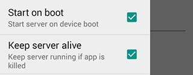
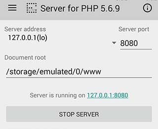
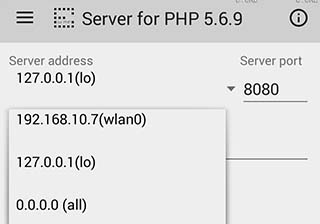
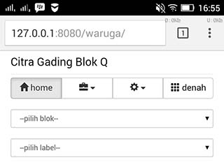
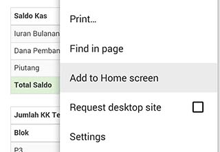
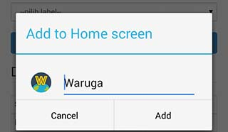

Waruga
Adalah aplikasi untuk ketua RT dalam manajemen data warga dan menghitung uang kas dari iuran warga. Cocok digunakan di lingkungan perumahan.
Fitur aplikasi:
- Iuran warga dan Uang KAS
- Data Warga per Blok
- Denah Blok
- Broadcast SMS dengan bantuan SMS server, akan dibuatkan versi Khusus.
- Mengetahui Warga yang belum Iuran
- Statistik Iuran dan KAS
- Catatan Surat menyurat*
- Buku Tamu*
- Absen Ronda*
- Pegawai RT (Satpam/Tukang Sampah)*
- Sinkronisasi*
- Backup*
- Export data*
- Export Vcard
- dll
Aplikasi dibuat menggunakan PHP dan memerlukan web server untuk menjalankannya. Pada android bisa menggunakan aplikasi Server for PHP, sudah saya siapkan installernya diatas, dan pada PC/Laptop Windows menggunakan WAMP atau XAMPP.
Instalasi pada PC/Laptop silahkan download WAMP/XAMPP lalu unduh Web Installer. Cara ini mungkin agak rumit bagi orang awam, silahkan hubungi @ibnux untuk bantuan.
Instalasi pada Android
Untuk Android tinggal install Bundle APK diatas, jalankan Aplikasi Server for PHP untuk memulai instalasi web server. aktifkan Start on boot dan Keep Server Alive

Untuk Keamanan pilih IP 127.0.0.1

Pilih IP Wlan jika ingin diakses dari Laptop/PC, akan muncul jika terkoneksi dengan wireless, hati-hati orang lain bisa akses juga.

Akses http://127.0.0.1:8080/waruga/ dari Browser Chrome (Rekomendasi), pastikan alamat diakhiri garis miring /

Klik menu atau 3 titik di kanan atas, pilih Add to HomeScreen


Selanjutnya anda tinggal akses Waruga dari icon yang ada di Home Screen.
Untuk Bantuan, pertanyaan dan lain lain silahkan di diskusikan disini.
Aplikasi ini dibuat menggunakan PHP agar portable, open source, mudah mengurusnya, dan bisa cepat perbaikan bugnya, bahkan bisa minta bantuan banyak developer untuk menambah fiturnya.
Masih banyak PR yang harus diselesaikan, aplikasi dikerjakan di sela-sela ibnux mencari uang :D
Donasi bisa ke Bank BCA 4890151162 an. Ibnu Maksum, Donasi bisa membantu mempercepat pembuatan aplikasi ini